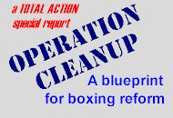

 |
Chapter 69
SUSPENSION?
FUGGETABOUTIT! |
|
|
By CHARLES JAY, Editor/Publisher, TotalAction.com
Posted October 26, 2002
It has recently been revealed that a fighter named Juan Carlos Rubio was fighting under
suspension when he scored a ten-round decision over prospect Francisco Bojado on February
16 of this year - not for the first time, but for the second. The New Jersey commission
had put Rubio on suspension on October 6, 2000, after his two-round KO loss to Teddy Reid,
remarking that he "needs EKG, CAT-scan, and neuro".
In the interim, Rubio was permitted to fight in California on September 7, 2001, when he
kayoed Luis Montes, and in Connecticut (at the Mohegan Sun Casino), when he registered the
upset of the previously-unbeaten Bojado.
Rubio's suspension had not been lifted, in fact, until October 10 of this year - one day
before he fought Alejandro Jiminez in San Antonio.
Clearly, neither the California commission nor the one in Connecticut had contacted Larry
Hazzard's office in New Jersey, as required by federal law, in order to execute the steps
necessary to take Rubio off the suspension list. And that was wrong. As Tim Lueckenhoff,
the current president of the Association of Boxing Commissions told reporter Andre
Courtemache, "The federal law requires that all commissions honor medical
suspensions. In this case Rubio should not have been allowed to fight."
That's right, Tim. Non-communication among boxing commissions is a major problem. And I've
got news for you - it has happened more often than you realize. Perhaps you want to place
a call to Harrisburg and ask one of your colleagues about it. Better yet - let me save you
the long distance charges.
Accompany me, if you will, on a trip back in time................
It was an otherwise lazy Sunday morning - April 30 of 2000, to be precise. I had just
finished updating the links on "The Fight Page", when I spotted a rather strange
e-mail message in my bin.
A commission administrator from Georgia - a man named Tom Mishou - was writing me to
discuss a matter that he felt carried some degree of importance.
Mishou had noticed that on the Fox Sunday Night Fight series that evening, a boxer named
Santiago Samaniego was being matched against Kenny Ellis, in a fight that was to take
place in conjunction with the Grand Victoria Casino in Elgin, Ill.
Mishou communicated to me that Samaniego was at that time suspended by his commission
(Georgia) - the result of a TKO loss to Vernon Forrest the previous August in which
Samaniego had incurred an eye injury, and that he (Mishou) had not received as much as a
courtesy call from the Illinois commission in order to take the fighter off the suspension
list, as was required by Federal law.
Not only that, but this was the third time this had happened with Illinois.
And I'll tell you the funny thing about that - I had seen Samaniego's name on at least one
America Presents press release during the previous week, and while fishing around the
ABC's suspension list, looking for someone else, I had run across Samaniego, with two
references next to his name - one for the medical suspension in Georgia, the other for
failure to renew a Federal ID card. I was considering putting together a short story on
this apparent snafu.
So it was like "deja vu" that Mishou had made his attempt to contact me.
In subsequently chatting with Mishou, and taking a look the Professional Boxer Safety Act
of 1996, I found him to be exactly correct. I also found him to be very straight-forward;
someone who did things by the book and who knew exactly who to operate, both by law and by
protocol.
Recognizing that the sport of boxing had just gone through a ring tragedy with the death
of Stephan Johnson, and that there seem to be varying degrees of respect among commissions
(generally in relation to how much boxing takes place there), I decided to write a piece
that illustrated what seemed to be a spirit of non-cooperation and non-communication among
commissions who were supposed to showing a spirit of unity.
The last few lines of my story read like this:
"Now, I have no doubt that Samaniego has renewed his Federal ID card. Renewal is a
mere formality, and you simply can't fight without it. But the question is, how does he
have the Federal ID card - in effect, a passport to fight, which is administered under the
authority of the ABC - if he has the existing suspension on his record, and it has not
been erased by an ABC-member commission? It indicates that perhaps someone is asleep at
the wheel. And it's an issue I'm going to ask the ABC's Greg Sirb (at that time president
of the organization) to answer to. Before the next Stephan Johnson meets an ugly
fate."
Well, apparently Greg Sirb didn't feel too comfortable being answerable to ANYONE. And so
either he subsequently contacted Larry Hamel of the Chicago Sun-Times, or Hamel contacted
him - I don't know, or care, how that chain of events went.
The end result of their communication was a piece by Hamel which appeared in the Sun-Times
a few days later, in which he essentially criticized me for the story, inferring that I
basically lied in my assessment of the situation.
I can assure anyone who reads the piece with any comprehension whatsoever that this wasn't
the case, and that there is very little room for misinterpretation. Unfortunately, Hamel
misinterpreted it - completely.
His story contains a quote from Sirb, alleging my story simply wasn't true:
"Illinois correctly followed procedure," Sirb said. "The fighter was not on
suspension," followed by Hamel's own ill-informed opinion:
"Sure, it's fashionable to turn over rocks looking for corruption in boxing, but it
helps if the facts support the story."
Whether he was directed by Sirb to do so or not, the poor schmuck Hamel, incredibly,
sought to blame GEORGIA:
"If there is fault to be assigned, and I question whether any should be, wouldn't it
be more appropriate to blame the folks in Georgia for issuing such an ambiguously written
condition as "DOC MUST OK LEFT EYE"?
Obviously this guy wasn't too familiar with the ABC's suspension list.
The most interesting thing about all this is that the morning after Samaniego's fight, I
went to the suspension list. Sure enough, the name Santiago Samaniego had been taken
completely off the list, as though it had never been there in the first place. I
immediately called Mishou. He told me he had not officially taken Samaniego off suspension
yet, because although he was expecting it, he had not yet received any materials or
notification from Illinois that would have led him to do so (he did later that day).
That left me with just one conclusion as to who had done it................
So just a couple of days after Hamel's story, during which time I had numerous talks with
Mishou, I fired off the following letter to Sirb:
___________________________________________________________________________
Mr. Sirb,
In my limited conversations with you I have found you to be most amicable and forthcoming.
At the same time, though, I feel you were being rather disingenuous in your quotes to
Larry Hamel of the Chicago Sun-Times with regard to Santiago Samaniego. I get the
impression from these comments that 1) you unilaterally decided Samaniego was off
suspension, and 2) that my report was a lie.
Yet in checking with Tom Mishou of Georgia, who is probably the most
straightforward person I have met in boxing, he tells me that his jurisdiction still had
Samaniego under suspension as of the time of his Sunday fight, citing lack of any
notification or consultation with him AS THE SUSPENDING JURISDICTION as per Section 7,
4-B-b-1 of the Professional Boxing (sic) Safety Act of 1996, which is the enabling
legislation of the ABC, is it not?
Because Mishou levied the suspension, I would tend to consider his ruling as the ONLY
valid one in this case, and if other commissions had not followed the proper procedure
WITH HIM, no decisions made by commissions, doctors, your office, or anyone else really
means a thing, in terms of the strictest adherence to the Federal law in effect.
Unfortunately, Mr. Hamel did not do a very good job of reporting; he felt it not
necessary, for some reason, to make an effort to contact Mr. Mishou regarding the
suspension HE imposed and STILL had in effect, at least officially on the record.
That having been said, I have some direct questions for you:
-- Do you have the authority to overrule the medical suspensions of your member state
commissions unilaterally, and without notification, whether written or verbal, to the
suspending commission? In other words, is there some kind of amendment to the governing
law that I am not aware of?
-- Do state commissions have the authority to unilaterally lift suspensions imposed by
other commissions, without regard to procedures as set forth in the Professional Boxing
Safety Act?
-- If medical suspensions on the part of one commission are not followed TO THE LETTER by
other commissions, and if such commissions are not compelled to honor them in reciprocal
fashion, what purpose is there for the ABC's existence?
-- Did Santiago Samaniego appeal to the ABC for direct action in lifting the suspension,
as is provided for in Section 7, 4-B-b-2 of the Professional Boxing Safety Act, and if
so.................
What were the "insufficient grounds" under which you overturned his suspension?
What "improper purposes" were cited in the Georgia suspension? Why wasn't
written notification given?
If so, do you have written notarized documentation of such an appeal? And would you be
kind enough to furnish it to me?
My guess is that there was no appeal, since I can't imagine any grounds under which
Samaniego could successfully file it. And the appeal, while provided for, is for
extraneous circumstances at best.
-- You are quoted in the Hamel article as stating that Illinois "used proper
procedures" in clearing Samaniego to fight. Let me quote verbatim from the
Professional Boxing Safety Act --
Section 7, 4-B-b-1
"1) for any reason other than those listed in subsection (a) if such commission
notifies in writing and consults with the designated official of the suspending State's
boxing commission prior to the grant of approval for such individual to participate in
that professional boxing match"
Subsection (a) refers to conditions under which a boxer can revoke a suspension. But in
cases of suspensions from another state, they STILL must provide this critical
notification to the suspending commission. And that certainly is the case in Georgia. I'm
sure you have a copy of their regulations on file.
Given these parameters, did Illinois really follow "proper procedure" in
allowing Samaniego to fight, not once, not twice, but THREE times? Did Nevada? I can
assure you they never contacted the suspending commission, because the suspending
commissioner TOLD ME they didn't. And unless Tom Mishou is flat-out lying to me, it's
really a cut-and-dried issue, isn't it?
Honestly, I think all of us can agree that Samaniego was physically fit to fight.
Samaniego, in this specific instance, was not the big issue. In fact, no one was looking
to prevent him from fighting.
I'm more concerned with the bigger picture. When Stephan Johnson was suspended by the
Ontario commission, with their own requests for contact from other commissions, were they
not ignored? Did Stephan Johnson not pass all the "required" tests in South
Carolina and New Jersey, thereby creating the facade that he was in proper physical
condition and ready to fight? And did Stephan Johnson not die from ring injuries that
could have been avoided had one commission decided to "follow proper procedure"
and contact another?
Here's an excerpt from a Toronto Star story, published while Johnson was still fighting
for his life:
............."Ontario athletics commissioner Ken Hayashi said yesterday he'd received
billing from Johnson for only a CAT scan, so Johnson was still technically suspended when
he won fights in South Carolina in August and another in Georgia in October before taking
the fateful fight last month in New Jersey.
``South Carolina took the radiologist's report and took him off the suspended list. . . .
They should have checked (with Ontario) first,'' Hayashi said. ``And I know I wouldn't
have released the suspension based on that report (the CAT scan alone). . . . Basically,
any state commission is not supposed to let any fighter fight while he's under medical
suspension. That's an American federal law - out of courtesy they would observe our
Canadian suspension.''
Added Hayashi: ``Nobody thought to call me. I'm disappointed. (But) with the amount of
fights going on, it can happen. I would have advised them not to let him fight. I wouldn't
have released my suspension (based) on that radiologist's report
alone.''........................
Different injuries? Yes. Greater severity? Certainly. But the same potential
cause-and-effect -- no communication, no reciprocation, no respect among boxing
commissions that are supposed to be fighting for the same cause - fighter safety. Sure,
there was no real danger with Samaniego. But perhaps next time a commission ignores
"proper procedure" there will be a more tragic effect. Do we have to wait for
that next time to happen?
How many more Stephan Johnsons do we need?
Why can't we, for once, be PRO-active, instead of RE-active? Why should we wait for a
tragedy to strike before taking steps to prevent others? Let's take the pre-emptive steps
now, and let's make it an item for discussion at your annual meeting in Denver in July.
There's no place in boxing for individual jurisdictions, not to mention an umbrella
organization (ABC), who eschew the very rules they have established, for the sake of
convenience. And there is no room for apologists after the fact. Sadly, Mr. Hamel did not
understand this "greater issue" when he wrote his unfortunate Chicago Sun-Times
piece. I'm hoping, for the sake of the sport, that YOU do.
Your prompt response to my direct questions would be greatly appreciated.
And oh by the way, one day after the Samaniego-Ellis fight, which was also one day after
my piece on Samaniego ran (not coincidentally, I'm guessing), Tom Mishou informed me that
his office FINALLY received the required medical reports to facilitate his rescindment of
Samaniego's suspension.
Under different circumstances, it could have been a day too late.
Think about it.
Sincerely,
Charles Jay
Editor/Publisher
The Fight Page
_____________________________________________________________________________
I meant it then. I mean it now.
And for the record, I couldn't care less whether Stephon Johnson's fatal injuries
had anything to do with a previous ring injury. The NON-COMMUNICATION between these
commissions is the material issue to me. The bottom line is that shirking responsibilities
can create more situations that put a fighter in peril.
What I found ironic, and at the same time rather pathetic, was that I had to actually
school the reigning president of the Association of Boxing Commissions on what the federal
law was - even if I did not quite call it by its correct name.
Another thing that is extremely important to note is that when I ask questions like I
asked in the letter, I'm not interested in anything but an e-mail response; that way,
there can be no mistaking what is asked or answered. Verbatim questions and quotes offer
the best protection to BOTH parties - I deal with Bob Yalen of ESPN the same way, since I
refuse to yield to the network's requirement that interviews with him be
"chaperoned" by one of its PR people.
It is not inconsequential to acknowledge that although I didn't have a particular feeling
about him, one way or another, it had been recommended to me that this was the best way to
nail Sirb down to a quote that couldn't possibly be denied later.
Well, I've never received an answer to my questions - to this day.
My point to this whole thing is two-fold -- 1) If you're the president of a national
organization, even a trade association (the ABC) devoted in some way to the regulation of
boxing, it is imperative that you know the federal law, and tragic if you don't; and 2)
Not to sound too arrogant about it, but if you're going to contradict me on something like
this - in public - it's best to be about one-thousand percent correct.
So I came away from the experience wondering - isn't it odd that there wasn't an awareness
of the federal laws concerning boxing, that anyone would circumvent those laws to cover up
for a mistake made by others, and that someone would misrepresent proper procedure in
talking to a reporter?
And ever since, I'm asking myself if those are the kinds of things we're looking for in a
"national boxing czar".
Maybe John McCain or Ken Nahigian can come up with an answer to that.
Also interesting - about 4-1/2 months after all this had happened, I was sitting in a
Miami Beach coffee shop, having breakfast with Marc Ratner, executive director of the
Nevada commission. At the outset of our conversation, he mentioned to me that he had just
gone through a situation with a tribal commission in Washington where he had to be
notified before releasing Roberto Duran to fight. Duran was on an active suspension in
Nevada as a result of his August 1998 title bout against William Joppy, and Ratner pointed
out that by federal law, he had to give consent for Duran to take part in any contest.
Ding, ding, ding!
Keeping in mind that Nevada was one of the states that had let Samaniego fight while he
was suspended by Georgia, I asked Ratner if he now understood the point I was trying to
make back on April 30.
He acknowledged he did.
And here's the post-script on Larry Hamel, to give you an idea of what "command"
he has over his subject matter -
In a June 1 column, in which he was trying to explain that the Ali Act would actually HURT
fighters, Hamel wrote, "The act, which passed both the Senate and the House and has
been sent to President Clinton, would place a one-year limit on the length of contracts
between promoters and fighters."
Well, anyone who has read what was posted at TotalAction knows that the Ali Act doesn't
say that at all - what it says is that "coercive" contracts, i.e., contracts
with options, usually as a result of title fights, can not last more than one year.
Just another case of a "boxing writer" who either doesn't know HOW to read, or
WHAT to read.
Mercifully, Hamel has been taken off the boxing beat by the Sun-Times.
By the way, Larry, I'm told I turn up some pretty good rocks.
Finally, in perhaps the most ironic twist of all, it was the first week of August and I
was looking at a fight schedule, when I noticed that Santiago Samaniego was slated to
fight on August 10 in Marseille, France, against welterweight contender Mamadou Thiam.
When I poked around a little further I found that Samaniego was, as of that date, under an
indefinite suspension in the state of Texas, and an "ID card" suspension in
California.
This is what the entry looked like:
Samaniego, Santiago (FL006244) TX 01/21/01 indefinite
Samaniego, Santiago (FL006244) CA 12/07/01 must renew Fed ID card
Well, despite these sanctions, Samaniego wound up having his fight, and in fact, came from
behind to knock Thiam out, claiming the WBA "interim" junior middleweight crown.
Naturally, I sat there wondering - did someone illegally erase THAT suspension too, just
to spite me?
Hmmmmmmm.
fightpage@totalaction.com
|
Copyright 2002 Total Action Inc.
|